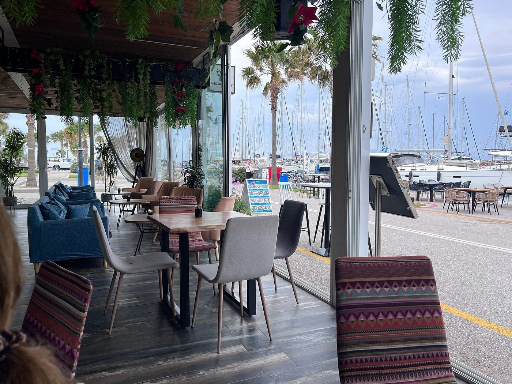
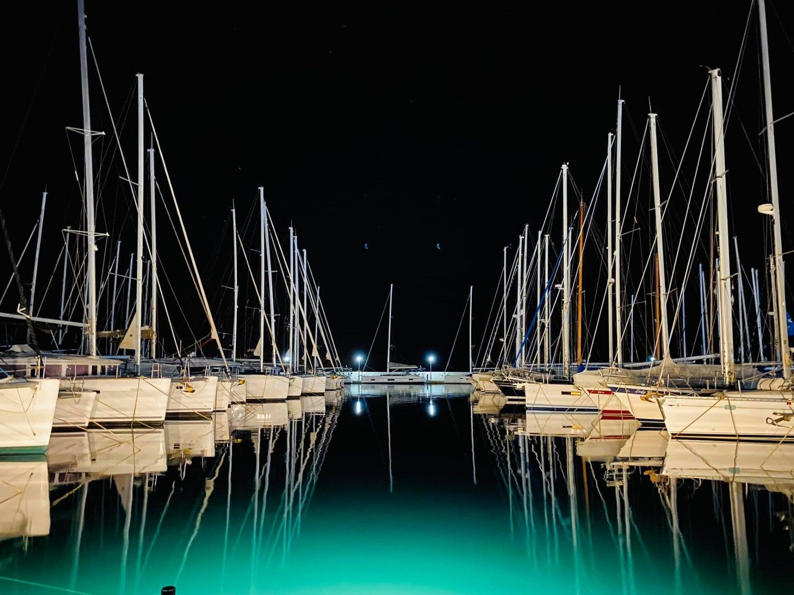
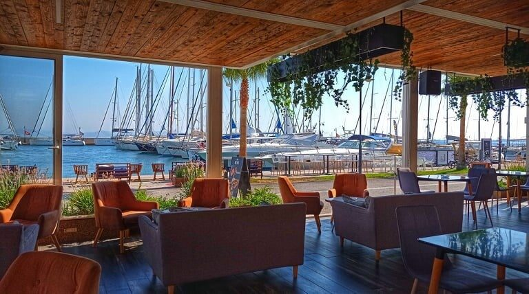
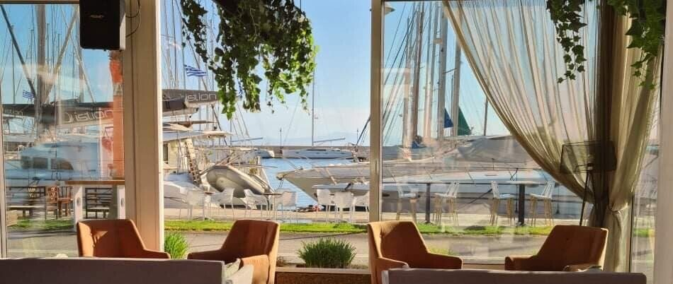
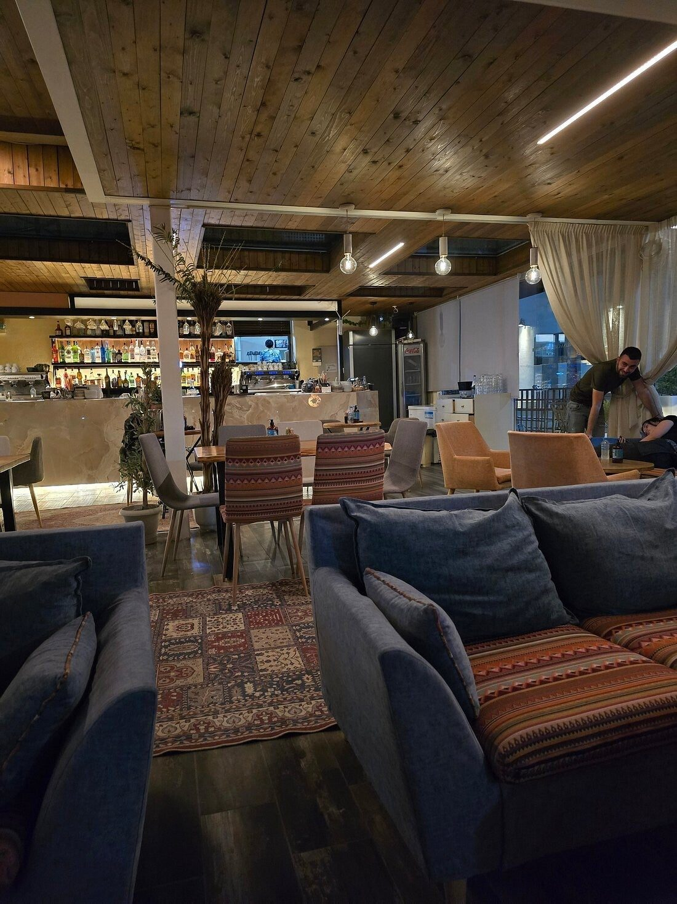
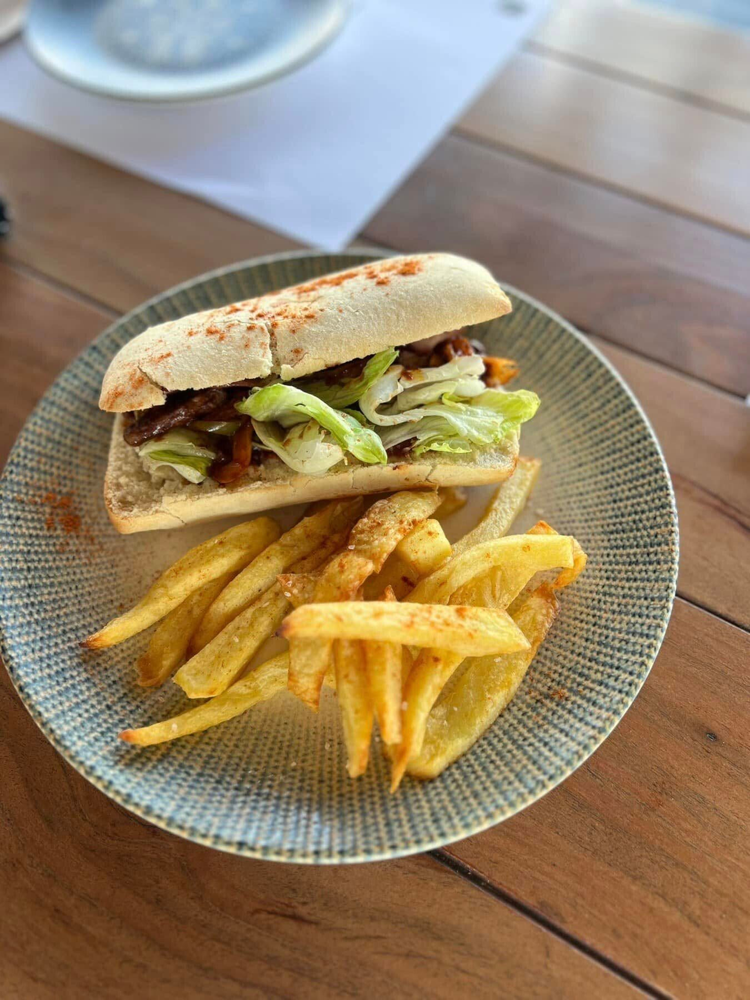
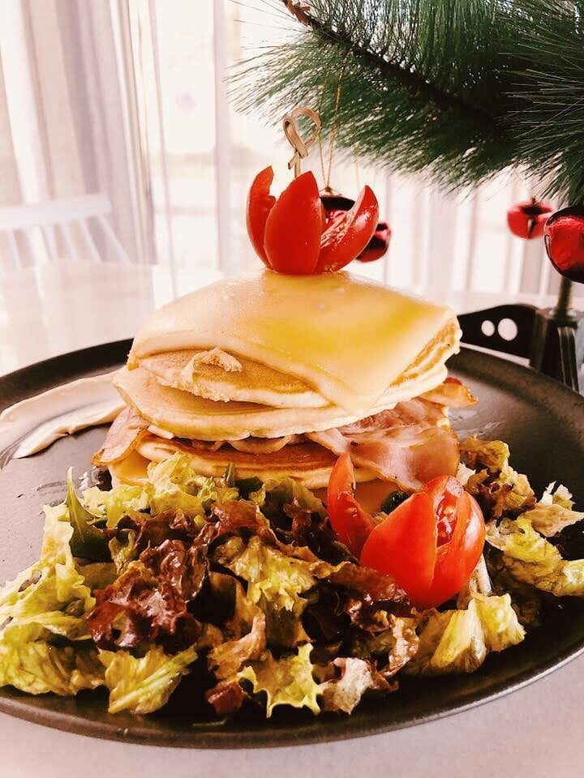
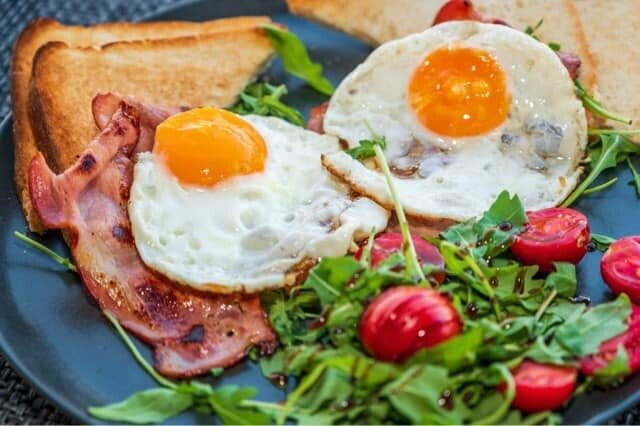
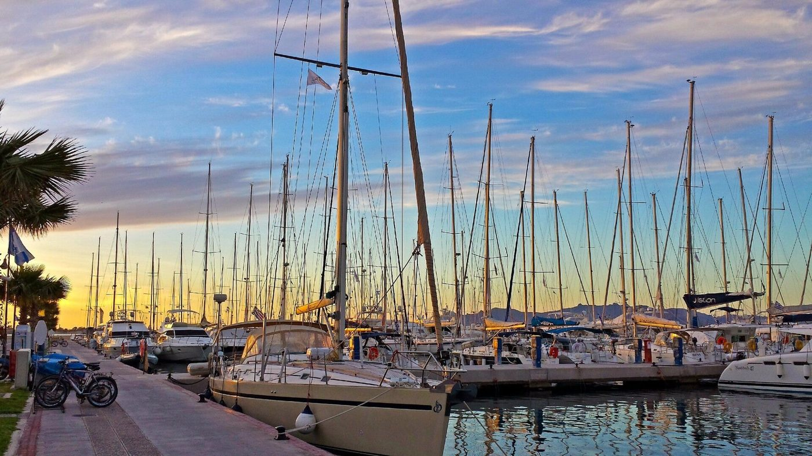

Kos - Stad
Marina Yacht Cafe, pal in de Kos Marina (jachthaven), is vooral een relaxte all-day spot met uitzicht op jachten en het water, ideaal voor cocktails, drankjes en een chill avondje. 's Avonds wordt het een fijne plek voor sunset drinks en nachtelijke vibes.
Het is vooral een plek voor een relaxed drankje en goede cocktails, met ook veel lokale mensen. Op sommige avonden is er live muziek. Alleen af en toe in het weekend is er een feest met een DJ, niet elke avond.

Laid-back
Exquisite cocktails (vaak geserveerd 'the marina way'), lekkere bites en een laid-back sfeer met live muziek. Speciale events op sommige avonden en op donderdag meestal live optredens. Het is geen hardcore club of dancefloor-plek, maar wel een gezellige hangout, waar je rustig kunt stappen met een drankje, mensen kijken en genieten van de havenverlichting.

Marina-ambiance
Perfect voor een ontspannen start van de nacht of als tussenstop tijdens barhoppen in Kos-stad. De crowd is een mix van locals, zeilers en mensen die er als toerist zijn; het voelt elegant maar niet te stijf, met een focus op goede cocktails en een serene marina-ambiance tot laat in de avond. Ideaal als je van classy drinks met uitzicht houdt in plaats van wilde clubnachten!

Intieme feesten
Alleen af en toe in het weekend worden er gezellige en intieme feesten georganiseerd met een DJ, niet elke avond. Die feesten trekken niet alleen veel lokale Grieken, maar ook bezoekers van buiten de deur. Deze feesten zijn vaak een uitstekende gelegenheid voor mensen om samen te komen, te dansen en te genieten van de levendige sfeer die zulke evenementen met zich meebrengen.

Koffie
De beste koffie in Kos vind je bij Marina Yacht Cafe, gelegen in de prachtige jachthaven van Kos-stad. Hier geniet je van een rijke espresso of perfecte cappuccino met uitzicht op luxe jachten en het kalme water. De ideale start van je dag op het eiland!

Broodjes
Marina Yacht Cafe serveert verse lekkere belegde broodjes, zoals club sandwiches, toasted baguettes en ham-kaas croissants, vaak groot en goed deelbaar. Met verse ingrediënten en een mooi uitzicht op de haven.
Lunch aan het water
Het is een relaxte all-day spot waar je dit combineert met koffie of een drankje, ideaal voor een snelle lunch of snack aan het water. De plek waar je verse baguettes en belegde broodjes kunt krijgen, net zoals je dat als toerist een beetje gewend bent.

Uitgebreid menu
Als je zin hebt om de dag rustig te starten met uitzicht op de jachthaven, zit je bij Marina Cafe goed. Je hoort het zachte klotsen van het water tegen de boten, je ziet de masten licht wiegen en je ruikt de verse koffie terwijl je ontbijt. Het menu is opvallend uitgebreid voor Kos-stad: van simpele Griekse yoghurt met honing en walnoten, vers brood met olijfolie en feta, tot scrambled eggs met bacon, avocado-toast, pancakes, omeletten en verse fruitsalades.

Redelijke prijs
Je kunt eigenlijk alles mixen zoals je wilt. Wat opvalt is dat de prijzen heel redelijk blijven, ontbijten begint rond de €2,50 en het uitgebreidste bord kost niet meer dan €8,50. Het terras is ruim, de bediening relaxed en het voelt alsof je even echt vakantie viert, zonder dat het overdreven luxe of toeristisch wordt.

Zaterdag druk
Houd er rekening mee dat veel boten op zaterdag arriveren en weer vertrekken. Hierdoor zijn de zaterdagen bijzonder druk. Het is daarom niet aan te raden om 's ochtends bij Marina Café te ontbijten, als je chaos en drukte wilt vermijden.
